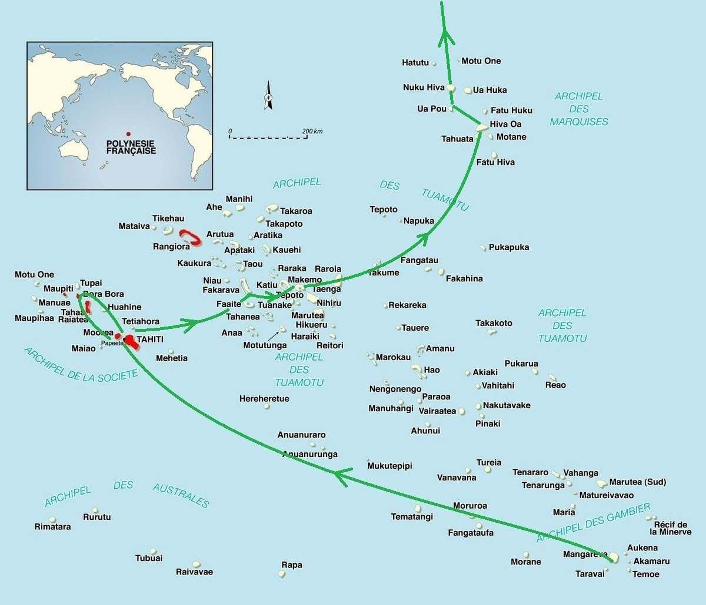

|
Gambier-Papeete. Comme on passait à 15nm de Mururoa, on a essayé de pêcher une dorade radioactive. Papeete-Fakarava. On a voulu faire les malins: on est parti sur une bascule à Papeete. Résultat: 150 nm au près, avec 25/30 noeuds de vent et arrosage intégré. Entrée de la passe sud à 5h30 du mat sous 30 noeuds... chaud... Fakarava-Tahanea. Départ à 5h30 du matin pour cette courte traversée au près serré. Tahanea-Makemo. 50 nm peinards. Traversée marquée par le blocage de la GV entre le premier et le deuxième ris. Makemo-Atuona. Partis à 8 noeuds de moyenne, on a fini au moteur. Un peu plus de 3 jours pour 515 nm. |
 |
| Date | Lieu | Log (nm) |
| 09/06/2012 au 11/07/2012 | Gambier | 15000 |
| 18/07/2012 au 22/07/2012 | Tahiti | 15885 |
| 22/07/2012 au 23/07/2012 | Moorea | 15905 |
| 23/07/2012 au 26/07/2012 | Huahine | 16005 |
| 26/07/2012 au 27/07/2012 | Raiatea | 16040 |
| 27/07/2012 au 30/07/2012 | Bora Bora | 16070 |
| 31/07/2012 au 06/08/2012 | Moorea | 16205 |
| 06/08/2012 au 19/08/2012 | Tahiti | 16225 |
| 19/08/2012 au 28/08/2012 | Moorea | 16240 |
| 28/08/2012 au 02/09/2012 | Tahiti | 16250 |
| 04/09/2012 au 24/09/2012 | Fakarava | 16590 |
| 24/09/2012 au 03/10/2012 | Tahanea | 16640 |
| 03/10/2012 au 26/10/2012 | Makemo | 16735 |
| 29/10/2012 au 13/11/2012 | Hiva Oa | 17250 |
| 13/11/2012 au 19/11/2012 | Tahuata | 17260 |
| 19/11/2012 au 27/11/2012 | Hiva Oa | 17270 |
| 27/11/2012 au 18/12/2012 | Ua Pou | 17340 |
| 18/12/2012 au 23/01/2013 | Nuku Hiva | 17370 |
| 24/01/2013 au 31/01/2013 | Tahuata | 17460 |
| 01/02/2013 au 09/02/2013 | Hiva Oa | 17470 |
| 09/02/2013 au 19/02/2013 | Nuku Hiva | 17560 |